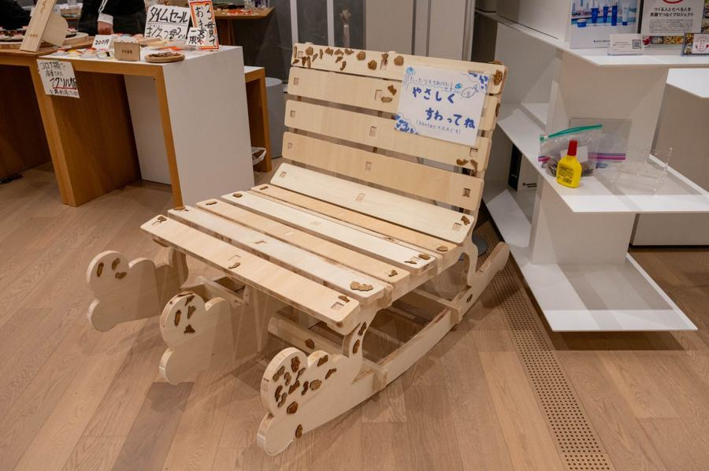

突然ですが、かわせみは前々からブランコをつくりたいという野望がありました。
今まではなんとなくでしたが、やろうと決めたのには理由がありました。
それは、南足柄の人との交流をきっかけに木に関心が深まったからです。（以下参照）

はじめは二点支点の皆が昔遊んだようなブランコを考えました。
しかし、さすがに建築学を学んでいるわけでも物理が得意なわけでもないので、
安全面を考慮して宙づり以外の方法を考え3日くらいが立ちました。
気晴らしに山下公園を散歩したときにベンチが目に留まりひらめきました。
とりあえず帰宅し、その日のうちにミニチュア版のデータを作りました。
これが後々大きな失態となるのですが、イラレはCNCのデータ作成には向いてません。
というのも、ミニチュアでつくった場合に厚みが変わり、線を縮尺しなおさないといけない
要するに超絶大変なのです。
※fusion360ならパラメータを作って数字だけの入力で変更できます。
そんな具合で、学際まで残り２週間ほど…人生で一番ものづくりしてた気がします（笑）
組み立て途中はこんな感じ
支えが２本だとゆがんだり、先述の失態通りで寸法合わなかったり色々ありました。
ですが、他の人のアドバイスや、やすり掛けのお手伝いのおかげで完成できました。
今回かわせみ初めてとなるSOPBOT作品でしたが、本当に大変でしたw
他のことも掛け持ちしてたのもあり、マジでエナドリしか摂取できない日々が続き(限界美大生？w)
学祭が終わってようやっと人間に戻りました（笑）
大変だったけど皆楽しんでくれたので後悔はないです。
南足柄の方ともさらなる交流が出来そうで楽しみです！